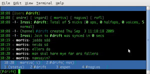

Posted October 7, 2009 by MrDingle
I want to include a .html element from otherhost.com on my website. This is how to do it With ESI (Edge Side Include) in varnish:
On my webserver i have index.html. Inside this document i want to include externalcontent.html from otherhost.com. The html code which varnish needs to interpret looks like this:
<esi:include src="http://otherhost.com/externalcontent.html"/>
In order to make varnish aware of the need to do esi processing you need the following in your varnish config:
1. We need to define otherhost.com as a backend in order for varnish to know that it needs to fetch this content from another host: (the .host part needs to be the ip of the webserver for otherhost.com)
backend otherbackend {
.host = "1.2.3.4";
.port = "80";
}
2. Inside vcl_fetch:
Note: the req.url ~ “whatever” needs to reflect which pages needs esi processing)
if (req.url ~ "index.html") {
esi;
}
3. Inside vcl_recv:
if (req.http.host == "otherhost.com") {
set req.backend = otherbackend;
}
4. Restart varnish and you are done 
/etc/init.d/varnish restart
Reference:
http://varnish.projects.linpro.no/browser/trunk/varnish-cache/bin/varnishtest/tests/e00006.vtc
Tags: content, esi, external, remote, varnish
Posted October 7, 2009 by MrDingle
Recently i wanted to upgrade Varnish to latest stable – 2.0.4 on our debian etch boxes. Do you think debian has the latest version in the etch repos? Ofcourse not.. However, backporting turned out to be allmost too easy Here is how I did it;
1. Edit your /etc/apt/sources.list deb-src entry to reflect which debian version you want to backport packages from. My entry looks like this:
deb-src http://ftp.no.debian.org/debian/ unstable main non-free contrib
2. Download the source code from the repo:
apt-get source varnish
3. Make sure you have all the deps needed:
apt-get build-dep varnish
4. (might not be necessary) I was missing the fakeroot package:
apt-get install fakeroot
5. Build the package(s):
cd varnish-2.0.4
dpkg-buildpackage -rfakeroot -uc -b
6. And finally install your newly created packages:
cd ..
dpkg -i *.deb
Reference(s):
http://www.debian.org/doc/manuals/apt-howto/ch-sourcehandling.en.html
Tags: 2.0.4, backporting, debian, etch, testing, unstable, varnish
Posted September 11, 2009 by MrBerry
http://en.wikipedia.org/wiki/Security_through_obscurity
Some doesnt believe in STO, i believe it doesnt hurt.
apache2.conf:
ServerTokens Prod
ServerSignature Off
This will only show that you are running Apache in the header, no signature at the end of apachegenerated pages.
php.ini:
expose_php = Off
This will remove the header X-Powered-By: PHP / version
Tags: apache2, php, security
Posted September 7, 2009 by morten
Pretty straight forward.
Edit your /etc/apt/sources.list. Substitute “etch” with “lenny”.
apt-get update
apt-get dist-upgrade
This will upgrade the system to lenny. Verify with
cat /etc/debian_version
The upgrade will not upgrade postgres. You need to do this manually.
apt-get install postgresql
8.3 will now be installed and configured to run on another port. 8.1 will still remain on your system, and you need to manually migrate your 8.1 bases to 8.3. Thankfully they provide some scripts for this.Here’s how you do it.
First drop the automatically created cluster for 8.3
g_dropcluster --stop 8.3 main
then upgrade the 8.1 cluster to 8.3
pg_upgradecluster -v 8.3 8.1 main
This should change the 8.1 config to run on another port while 8.3 should be running on default.
Prolly smart to stop 8.1, start 8.3 and verify that you’re databases are working as they should ..before you go ahead and remove 8.1.
If you run into some locales+postgres trouble with lenny. You should check your /etc/locale.gen, make sure the correct locales arent commented out,
and run locale-gen/dpkg-reconfigure. Then you should be able to start 8.1 again.
Tags: 8.1, 8.3, etch, lenny, postgres, upgrade
Posted September 7, 2009 by MrBerry
You got additional disk controllers in your server and the etch kernel is fucking up your devicenames from time to time.
Suddenly when you reboot the etch kernel decides to make /dev/sda become /dev/sdf etc.
Ubuntu has learned from this and they use UUID.
This is a unique ID the filesystem becomes, and when you boot, you really want to catch the right device for the root filesystem, or get a crappy Busybox shell.
This is how you implement it on Debian Etch (and possibly Lenny, if its not default there either):
fittafeis:~# /lib/udev/vol_id /dev/sda1
ID_FS_USAGE=filesystem
ID_FS_TYPE=ext3
ID_FS_VERSION=1.0
ID_FS_UUID=3abbdf59-4a9e-4be1-ac56-f474609e637c
ID_FS_LABEL=
ID_FS_LABEL_SAFE=
Now edit this line in /boot/grub/menu.lst:
From: # kopt=root=/dev/sda1 ro
To: # kopt=root=UUID=3abbdf59-4a9e-4be1-ac56-f474609e637c ro
Then run update-grub and it will update all your kernel entries using UUID
Tags: blockdevice, debian, etch, uuid
Posted September 7, 2009 by MrBerry
A bunch of worthyful links to laugh at after a nice weekend:
(yeah i know they are old, but perhaps youve missed some of them?)
40 Most Disastrous Cable Messes
OpenOffice.org won’t print on Tuesdays
Urinal protocol vulnerability
Hot-Babe
Tags: funny
Posted September 4, 2009 by morten
Had an issue today where an old mysql-client on debian sarge failed to connect to a newer mysql-server on debian etch.
I was happy to find out that it’s easily fixed :
update mysql.user set password=OLD_PASSWORD('supahsecretpassword') where user='theuser' and host='some-ip-address';
then just :
flush privileges;
and you’re gooooood to goooooooooo
Tags: debian, mysql, sarge
Posted September 4, 2009 by MrBerry
Firefox easily often gets like Hersheys’s Syrup.
What may help is to cleanup the SQlite3 databases Firefox uses to store _SHIT_
First see that you have sqlite3 installed:
apt-get install sqlite3
Then stop/kill/murder all your firefox procs.
Run the following from a console:
for i in $(find ~/.mozilla -type f -name '*.sqlite' -print);do sqlite3 $i "VACUUM;";done
Most garbage in your firefox databases should now be clean. Fire it up again.
Tags: firefox, firefuck, linux, sqlite3
Posted September 4, 2009 by morten
http://anti.teamidiot.de provides a prettier windowlisting for irssi. Instead of getting a number for each window, you get the name of the channel or the name of the person you’re chatting with. This makes it easier to navigate and see where the action is going on.
This is how to do it :
mkdir -p ~/.irssi/scripts/autorun
cd ~/.irssi/scripts
wget http://anti.teamidiot.de/static/nei/*/Code/Irssi/adv_windowlist.pl
cd ~/.irssi/scripts/autorun
ln -s ../adv_windowlist.pl
in irssi:
/run autorun/adv_windowlist.pl
/set awl_display_key $Q%K|%n$H$C$S
/set awl_block -12
/statusbar window remove act

Tags: irssi
Posted August 26, 2009 by morten
There’s a few ways to do it, but I personally found pgpool2 to be very nice and easy to set up.
Here’s a quick and dirty guide to get it up and running.
First of all, you want your database backends to look exactly the same.
So dump the database and restore it on your second server.
Make sure your postgres backends allows your pgpool host to connect to them.
Pick a host where you wanna run pgtool2.
apt-get install pgpool2
It will automatically install a config file under /etc/pgpool.conf and start up pgpool2. Not very useful yet, since you need to do some configuring, so just kill it and open the config file for editing.
Note: pgpool has several config options that you can play with. I’m not gonna go through them here, but just show how to get the basics up and running.
First of all, you need to config access to the master/system dbserver:
# system DB info
system_db_hostname = 'test-dbserver1'
system_db_port = 5432
system_db_dbname = 'pgpool'
system_db_schema = 'pgpool_catalog'
system_db_user = 'someuser'
system_db_password = 'md5hashedvalue'
To find your md5 hashed password value, you can just use the command pg_md5 :
pg_md5 yourpasswordhere
After that you should configure info about your backend servers :
backend_hostname0 = 'test-dbserver1'
backend_port0 = 5432
backend_weight0 = 1
backend_hostname1 = 'test-dbserver2'
backend_port1 = 5432
backend_weight1 = 1
….and that’s about it. Now fire up pgpool2 on your host by typing :
pgpool -n -d
This will start pgpool in the foreground and display all debug info about whats going on. Handy when checking if things work properly. If they do, you can restart it by typing :
pgpool -f /etc/pgpool.conf
If you want to turn on replication, just change the parameter to:
replication_mode = true
..and restart pgpool.
Tags: debian, pgpool, pgpool2, postgres